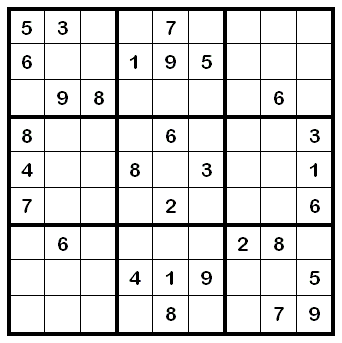

11. Slovníky a množiny¶
V predchádzajúcich prednáškach sme sa zoznámili s týmito typmi údajov:
jednoduché typy:
int,float,boolusporiadané kolekcie - prvky sa dajú indexovať číslom:
str,list,tupleokrem týchto už poznáme aj iterovateľné postupnosti, napríklad:
range(...),open(..., 'r')
V tejto prednáške sa zoznámime s ďalšími dvoma typmi, tzv. neusporiadanými kolekciami:
dict, set
Telefónny zoznam
Vyriešme úlohu, v ktorej budeme zostavovať funkcie pre spravovanie telefónneho zoznamu. Riešenie úlohy by mohlo vyzerať asi takto:
zoznam = []
def vypis():
print('\n'.join(f'{meno!r}: {cislo!r}' for meno, cislo in zoznam))
def pridaj(meno, cislo):
for i in range(len(zoznam)):
if zoznam[i][0] == meno:
zoznam[i] = meno, cislo
return
zoznam.append((meno, cislo))
def zisti(hladane_meno):
for meno, cislo in zoznam:
if meno == hladane_meno:
return cislo
print(f'zadane meno {hladane_meno!r} nie je v zozname')
def zrus(meno):
for i in range(len(zoznam)):
if zoznam[i][0] == meno:
del zoznam[i]
return
print(f'zadane meno {hladane_meno!r} nie je v zozname')
Vidíte, že do zoznamu ukladáme dvojice (meno, cislo).
Jednoduchý test:
pridaj('Jana', '0901020304')
pridaj('Juro', '0911111111')
pridaj('Jozo', '0212345678')
pridaj('Jana', '0999020304')
vypis()
Jana: 0999020304
Juro: 0911111111
Jozo: 0212345678
Štandardný typ slovník - dict¶
Typ dict slovník (informatici to volajú asociatívne pole) je taká dátová štruktúra, v ktorej k prvkom neprichádzame cez poradové číslo (index) tak ako pri zoznamoch, n-ticiach a reťazcoch, ale k prvkom prichádzame pomocou kľúča. Hovoríme, že k danému kľúču je asociovaná nejaká hodnota (niekedy hovoríme, že hodnotu mapujeme na daný kľúč).
Zapisujeme to takto:
kľúč : hodnota
Samotný slovník zapisujeme ako kolekciu takýchto dvojíc (kľúč : hodnota) a celé je to uzavreté v '{' a '}' zátvorkách. Slovník si môžeme predstaviť ako zoznam dvojíc (kľúč, hodnota), pričom v takomto zozname sa nemôžu nachádzať dve dvojice s rovnakým kľúčom. Napríklad:
>>> vek = {'Jan':17, 'Maria':15, 'Ema':18}
Takto sme vytvorili slovník (asociatívne pole, teda pythonovský typ dict), ktorý má tri prvky: 'Jan' má 17 rokov, 'Maria' má 15 a 'Ema' má 18. V priamom režime vidíme, ako ho vypisuje Python a tiež to, že pre Python to má 3 prvky (3 dvojice):
>>> vek
{'Jan': 17, 'Maria': 15, 'Ema': 18}
>>> len(vek)
3
Teraz zápisom, ktorý sa podobá indexovaniu zoznamu:
>>> vek['Jan']
17
získame asociovanú hodnotu pre kľúč 'Jan'.
Ak sa pokúsime zistiť hodnotu pre neexistujúci kľúč:
>>> vek['Juraj']
...
KeyError: 'Juraj'
Python nám tu oznámi KeyError, čo znamená, že tento slovník nemá definovaný kľúč 'Juraj'.
Rovnakým spôsobom, ako priraďujeme hodnotu do zoznamu, môžeme vytvoriť novú hodnotu pre nový kľúč:
>>> vek['Hana'] = 15
>>> vek
{'Jan': 17, 'Hana': 15, 'Maria': 15, 'Ema': 18}
alebo môžeme zmeniť existujúcu hodnotu:
>>> vek['Maria'] = 16
>>> vek
{'Jan': 17, 'Hana': 15, 'Maria': 16, 'Ema': 18}
Všimnite si, že poradie dvojíc kľúč:hodnota v samotnom slovníku je v nejakom neznámom poradí. Dokonca, ak spustíme program viackrát, môžeme dostať rôzne poradia prvkov. Podobnú skúsenosť určite máte aj s typom set z predchádzajúcej prednášky.
Pripomeňme si, ako funguje operácia in s typom zoznam:
>>> zoznam = [17, 15, 16, 18]
>>> 15 in zoznam
True
Operácia in s takýmto zoznamom prehľadáva hodnoty a ak takú nájde, vráti True.
So slovníkom to funguje trochu inak: operácia in neprehľadáva hodnoty ale kľúče:
>>> 17 in vek
False
>>> 'Hana' in vek
True
Vďaka tomuto vieme zabrániť, aby program spadol pre neznámy kľúč:
>>> if 'Juraj' in vek:
... print('Juraj ma', vek['Juraj'], 'rokov')
... else:
... print('nepoznám Jurajov vek')
Keďže operácia in so slovníkom prehľadáva kľúče, tak aj for-cyklus bude fungovať na rovnakom princípe:
>>> for i in zoznam:
... print(i)
17
15
16
18
>>> for i in vek:
... print(i)
Jan
Hana
Maria
Ema
Z tohto istého dôvodu funkcia list() s parametrom slovník vytvorí zoznam kľúčov a nie zoznam hodnôt:
>>> list(vek)
['Jan', 'Hana', 'Maria', 'Ema']
Keď chceme zo slovníka vypísať všetky kľúče aj s ich hodnotami, zapíšeme:
>>> for kluc in vek:
... print(kluc, vek[kluc])
Jan 17
Hana 15
Maria 16
Ema 18
Zrejme slovník je rovnako ako zoznam meniteľný typ (mutable), keďže môžeme do neho pridávať nové prvky, resp. meniť hodnoty existujúcich prvkov.
Napríklad funguje takýto zápis:
>>> vek
{'Jan': 17, 'Hana': 15, 'Maria': 16, 'Ema': 18}
>>> vek['Jan'] = vek['Jan'] + 1
>>> vek
{'Jan': 18, 'Hana': 15, 'Maria': 16, 'Ema': 18}
a môžeme to využiť aj v takejto funkcii:
def o_1_starsi(vek):
for kluc in vek:
vek[kluc] = vek[kluc] + 1
Funkcia zvýši hodnotu v každej dvojici slovníka o 1:
>>> o_1_starsi(vek)
>>> vek
{'Jan': 19, 'Hana': 16, 'Maria': 17, 'Ema': 19}
Pythonovské funkcie teda môžu meniť (ako vedľajší účinok) nielen zoznam ale aj slovník.
Ak by sme chceli prejsť kľúče v utriedenom poradí, musíme zoznam kľúčov najprv utriediť:
>>> for kluc in sorted(vek):
... print(kluc, vek[kluc])
Ema 19
Hana 16
Jan 19
Maria 17
Slovníky majú definovaných viac zaujímavých metód, my si najprv ukážeme len 3 z nich. Táto skupina troch metód vráti nejaké špeciálne „postupnosti“:
keys()- postupnosť kľúčovvalues()- postupnosť hodnôtitems()- postupnosť dvojíc kľúč a hodnota
Napríklad:
>>> vek.keys()
dict_keys(['Jan', 'Hana', 'Maria', 'Ema'])
>>> vek.values()
dict_values([19, 16, 17, 19])
>>> vek.items()
dict_items([('Jan', 19), ('Hana', 16), ('Maria', 17), ('Ema', 19)])
Tieto postupnosti môžeme použiť napríklad vo for-cykle alebo môžu byť parametrami rôznych funkcií, napríklad list(), max() alebo sorted():
>>> list(vek.values())
[19, 16, 17, 19]
>>> list(vek.items())
[('Jan', 19), ('Hana', 16), ('Maria', 17), ('Ema', 19)]
Metódu items() najčastejšie využijeme vo for-cykle:
>>> for prvok in vek.items():
... kluc, hodnota = prvok
... print(kluc, hodnota)
Jan 19
Hana 16
Maria 17
Ema 19
Alebo krajšie dvojicou premenných for-cyklu:
>>> for kluc, hodnota in vek.items():
... print(kluc, hodnota)
Jan 19
Hana 16
Maria 17
Ema 19
Jednou z najpoužívanejších metód okrem items() je get().
Napríklad:
>>> print(vek.get('Maria'))
17
>>> print(vek.get('Mario'))
None
>>> print(vek.get('Maria', 20))
17
>>> print(vek.get('Mario', 20))
20
Príkaz del funguje nielen so zoznamom, ale aj so slovníkom:
>>> zoznam = [17, 15, 16, 18]
>>> del zoznam[1]
>>> zoznam
[17, 16, 18]
Napríklad:
>>> vek
{'Jan': 19, 'Hana': 16, 'Maria': 17, 'Ema': 19}
>>> del vek['Jan']
>>> vek
{'Hana': 16, 'Maria': 17, 'Ema': 19}
>>> del vek['Juraj']
...
KeyError: 'Juraj'
Zhrňme všetko, čo sme sa doteraz naučili pre dátovú štruktúru slovník:
slovník = {}prázdny slovník
slovník = {kľúč:hodnota, ...}priame priradenie celého slovníka
slovník = {kľúč:hodnota for ... in ...}priame priradenie celého slovníka pomocou generátorovej notácie
kľúč in slovníkzistí, či v slovníku existuje daný
kľúč(vrátiTruealeboFalse)
len(slovník)zistí počet prvkov (dvojíc
kľúč:hodnota) v slovníku
slovník[kľúč]vráti príslušnú hodnotu alebo príkaz spadne na chybe
KeyError, ak neexistuje
slovník[kľúč] = hodnotavytvorí novú asociáciu
kľúč:hodnotaalebo zmení existujúcu
del slovník[kľúč]zruší dvojicu
kľúč:hodnotaalebo príkaz spadne na chybeKeyError, ak neexistuje
for kľúč in slovník: ...prechádzanie všetkých kľúčov
for kľúč in sorted(slovník): ...prechádzanie všetkých kľúčov slovníka v utriedenom poradí
for kľúč in slovník.values(): ...prechádzanie všetkých hodnôt
for kľúč, hodnota in slovník.items(): ...prechádzanie všetkých dvojíc
kľúč:hodnota
slovník.get(kľúč)vráti príslušnú hodnotu alebo
None, ak kľúč neexistuje
slovnik.get(kľúč, náhradná)vráti príslušnú hodnotu alebo vráti hodnotu parametra
náhradná, ak kľúč neexistuje
Predstavte si teraz, že máme daný nejaký zoznam dvojíc a chceme z neho urobiť slovník. Môžeme to urobiť, napríklad for-cyklom:
>>> zoznam_dvojic = [('one', 1), ('two', 2), ('three', 3)]
>>> slovnik = {}
>>> for kluc, hodnota in zoznam_dvojic:
... slovnik[kluc] = hodnota
>>> slovnik
{'one': 1, 'two': 2, 'three': 3}
alebo priamo použitím štandardnej funkcie dict(), ktorá takto funguje ako konverzná funkcia:
>>> slovnik = dict(zoznam_dvojic)
>>> slovnik
{'one': 1, 'two': 2, 'three': 3}
Takýto zoznam dvojíc vieme vytvoriť aj z nejakého existujúceho slovníka pomocou metódy items():
>>> list(slovnik.items())
[('one', 1), ('two', 2), ('three', 3)]
Funkciu dict() môžeme zavolať aj takto:
>>> slovnik = dict(one=1, two=2, three=3)
Vďaka tomuto zápisu nemusíme kľúče uzatvárať do apostrofov. Toto ale funguje len pre kľúče, ktoré sú znakové reťazce a majú správny formát pre identifikátory pomenovaných parametrov.
Asociatívne pole ako slovník (dictionary)
Anglický názov tohto typu dict je zo slova dictionary, teda slovník. Naozaj je „obyčajný“ slovník príkladom pekného využitia tohto typu. Napríklad:
slovnik = {'cat':'macka', 'dog':'pes', 'my':'moj', 'good':'dobry', 'is':'je'}
def preklad(veta):
vysl = []
for slovo in veta.lower().split():
vysl.append(slovnik.get(slovo, '<' + slovo + '>'))
return ' '.join(vysl)
>>> preklad('my dog is very good')
'moj pes je <very> dobry'
Zrejme, keby sme mali kompletnejší slovník, napríklad anglicko-slovenský s tisícami dvojíc slov, vedeli by sme veľmi jednoducho realizovať takýto „kuchársky“ preklad. V skutočnosti by sme asi mali mať slovník, v ktorom jednému anglickému slovu zodpovedá niekoľko (napríklad n-tica) slovenských slov.
Slovník ako frekvenčná tabuľka
Frekvenčnou tabuľkou nazývame takú tabuľku, ktorá obsahuje informácie o počte výskytov rôznych hodnôt v nejakej postupnosti (napríklad súbor, reťazec, zoznam, …).
Ukážeme to na príklade, v ktorom budeme zisťovať počty výskytov písmen v nejakom texte. Vytvoríme slovník, v ktorom každému prvku vstupného zoznamu (kľúču) bude zodpovedať jedno celé číslo - počítadlo výskytov tohto prvku:
def pocty_vyskytov(postupnost):
vysl = {}
for prvok in postupnost:
vysl[prvok] = vysl.get(prvok, 0) + 1
return vysl
pocet = pocty_vyskytov('anicka dusicka nekasli, aby ma pri tebe nenasli.')
for kluc, hodnota in pocet.items():
print(repr(kluc), hodnota)
Všimnite si použitie metódy get(), vďaka ktorej nepotrebujeme pomocou podmieneného príkazu if zisťovať, či sa v slovníku príslušný kľúč už nachádza. Zápis vysl.get(prvok, 0) pre spracovávaný prvok vráti momentálny počet jeho výskytov, alebo 0, ak sa tento prvok vyskytol prvýkrát.
'a' 7
'n' 4
'i' 5
'c' 2
'k' 3
' ' 7
'd' 1
'u' 1
's' 3
'e' 4
'l' 2
',' 1
'b' 2
'y' 1
'm' 1
'p' 1
'r' 1
't' 1
'.' 1
Tento výpis ukazuje, že písmeno 'a' sa v danej vete vyskytlo 7 krát a písmeno 'd' len raz.
Podobne môžeme spracovať aj nejaký celý textový súbor (dobs.txt alebo twain.txt):
with open('dobs.txt') as subor:
pocet = pocty_vyskytov(subor.read())
for kluc, hodnota in pocet.items():
print(repr(kluc), hodnota)
'p' 2618
'a' 12564
'v' 3939
'o' 8740
'l' 5068
' ' 21105
'd' 4252
'b' 1838
's' 5349
'i' 6227
'n' 5006
'k' 3482
'y' 2176
'\n' 722
'r' 3983
't' 5624
'e' 8522
'u' 3220
'm' 3243
'h' 2341
'c' 2804
'j' 2083
'z' 3032
'g' 90
'f' 27
'x' 2
Vidíme, že pri väčších súboroch sú aj zistené počty výskytov dosť vysoké. Napríklad všetkých spracovaných znakov bolo:
>>> sum(pocet.values())
118057
Ak by sme potrebovali zisťovať nie počty písmen, ale počty slov, stačí zapísať:
with open('dobs.txt') as subor:
pocet = pocty_vyskytov(subor.read().split())
Táto konkrétna štruktúra slovník je už dosť veľká a nemá zmysel ju vypisovať celú, veď všetkých rôznych slov a teda veľkosť slovníka je:
>>> len(pocet) # počet kľúčov v slovníku
5472
>>> sum(pocet.values()) # počet všetkých slov v súbore
21827
Ukážeme, ako môžeme zistiť 20 najčastejších slov vo veľkom texte. Najprv z frekvenčnej tabuľky pocet vytvoríme zoznam dvojíc (hodnota, kľúč) (prehodíme poradie v dvojiciach (kľúč, hodnota)). Potom tento zoznam utriedime. Robíme to preto, lebo Python triedi n-tice tak, že najprv porovnáva prvé prvky (teda počty výskytov) a potom až pri zhode porovná druhé prvky (teda samotné slová). Všimnite si, že sme tu použili metódu sort() pre zoznamy a pridali sme jeden pomenovaný parameter reverse=True, aby sa zoznam utriedil zostupne, teda od najväčších po najmenšie:
zoznam = [(hodnota, kluc) for kluc, hodnota in pocet.items()]
zoznam.sort(reverse=True)
print(zoznam[:20])
Pre súbor 'dobs.txt' dostávame:
[(1032, 'a'), (703, 'sa'), (436, 'na'), (238, 'ale'), (227, 'to'), (217, 'tu'),
(213, 'ze'), (212, 'do'), (203, 'len'), (200, 'v'), (188, 'ako'), (186, 'z'),
(184, 'si'), (166, 'tak'), (147, 'co'), (145, 'i'), (134, 'uz'), (132, 'za'),
(132, 'mu'), (116, 's')]
Ešte si uvedomte, že kľúčmi nemusia byť len slová, resp. písmená. Kľúčmi v slovníku môžu byť ľubovoľné nemeniteľné (immutable) typy, teda okrem str aj int, float a tuple. Teda by sme zvládli zisťovať aj počet výskytov prvkov číselných zoznamov, alebo hoci dvojíc čísel (súradníc bodov v rovine) a pod.
Zoznam slovníkov
Slovník môže byť aj hodnotou v inom slovníku. Zapíšme:
student1 = {
'meno': 'Janko Hrasko',
'adresa': {'ulica': 'Strukova',
'cislo': 13,
'obec': 'Fazulovo'},
'narodeny': {'datum': {'den': 1, 'mesiac': 5, 'rok': 1999},
'obec': 'Korytovce'}
}
student2 = {
'meno': 'Juraj Janosik',
'adresa': {'ulica': 'Pod sibenicou',
'cislo': 1,
'obec': 'Liptovsky Mikulas'},
'narodeny': {'datum': {'den': 25, 'mesiac': 1, 'rok': 1688},
'obec': 'Terchova'}
}
student3 = {
'meno': 'Margita Figuli',
'adresa': {'ulica': 'Sturova',
'cislo': 4,
'obec': 'Bratislava'},
'narodeny': {'datum': {'den': 2, 'mesiac': 10, 'rok': 1909},
'obec': 'Vysny Kubin'}
}
student4 = {
'meno': 'Ludovit Stur',
'adresa': {'ulica': 'Slovenska',
'cislo': 12,
'obec': 'Modra'},
'narodeny': {'datum': {'den': 28, 'mesiac': 10, 'rok': 1815},
'obec': 'Uhrovec'}
}
skola = [student1, student2, student3, student4]
Vytvorili sme 4-prvkový zoznam, v ktorom je každý prvok typu slovník. V týchto slovníkoch sú po 3 kľúče 'meno', 'adresa', 'narodeny', pričom dva z nich majú hodnoty opäť slovníky. Môžeme zapísať, napríklad:
>>> for st in skola:
... print(st['meno'], 'narodeny v', st['narodeny']['obec'])
Janko Hrasko narodeny v Korytovce
Juraj Janosik narodeny v Terchova
Margita Figuli narodeny v Vysny Kubin
Ludovit Stur narodeny v Uhrovec
Získali sme nielen mená všetkých študentov v tomto zozname ale aj ich miesto narodenia.
Ak by sme túto štruktúru vypísali pomocou print, dostávame takýto nečitateľný výpis:
>>> skola
[{'meno': 'Janko Hrasko', 'adresa': {'ulica': 'Strukova', 'cislo': 13,
'obec': 'Fazulovo'}, 'narodeny': {'datum': {'den': 1, 'mesiac': 5,
'rok': 1999}, 'obec': 'Korytovce'}}, {'meno': 'Juraj Janosik', 'adresa':
{'ulica': 'Pod sibenicou', 'cislo': 1, 'obec': 'Liptovsky Mikulas'},
'narodeny': {'datum': {'den': 25, 'mesiac': 1, 'rok': 1688}, 'obec':
'Terchova'}}, {'meno': 'Margita Figuli', 'adresa': {'ulica': 'Sturova',
'cislo': 4, 'obec': 'Bratislava'}, 'narodeny': {'datum': {'den': 2,
'mesiac': 10, 'rok': 1909}, 'obec': 'Vysny Kubin'}}, {'meno': 'Ludovit
Stur', 'adresa': {'ulica': 'Slovenska', 'cislo': 12, 'obec': 'Modra'},
'narodeny': {'datum': {'den': 28, 'mesiac': 10, 'rok': 1815}, 'obec':
'Uhrovec'}}]
Textové súbory JSON¶
Ak pythonovská štruktúra obsahuje iba:
zoznamy
listslovníky
dicts kľúčmi, ktoré sú reťazceznakové reťazce
strcelé alebo desatinné čísla
intafloatlogické hodnoty
TruealeboFalsehodnota
None
môžeme túto štruktúru (napríklad zoznam skola) zapísať do špeciálneho súboru:
import json
with open('subor.txt', 'w') as subor:
json.dump(skola, subor)
Takto vytvorený súbor je dosť nečitateľný, čo môžeme zmeniť parametrom indent:
with open('subor.txt', 'w') as subor:
json.dump(skola, subor, indent=2)
Prečítať takýto súbor a zrekonštruovať z neho celú štruktúru je potom veľmi jednoduché:
>>> precitane = json.load(open('subor.txt'))
>>> print(skola == precitane)
True
Vytvorila sa nová štruktúra precitane, ktorá má presne rovnaký obsah, ako do súboru zapísaný zoznam slovníkov skola.
Štandardný typ množina - set¶
Motivačný príklad
Zapíšme program, v ktorom pomocou niekoľkých funkcií budeme pracovať so zoznamom nejakých textov:
zoznam = []
def vypis():
print(', '.join(repr(prvok) for prvok in zoznam))
def pridaj(prvok):
if prvok not in zoznam:
zoznam.append(prvok)
def vyhod(prvok):
if prvok in zoznam:
zoznam.remove(prvok)
Otestujme:
pridaj('behat')
pridaj('upratat')
pridaj('ucit sa')
vypis()
pridaj('upratat')
pridaj('spievat')
vyhod('behat')
vypis()
print('pocet prvkov v zozname =', len(zoznam))
Typ množina
Python má medzi štandardnými typmi aj typ množina, ktorý má v Pythone meno set. Podobne ako aj iné typy str, list a tuple aj tento množinový typ je postupnosťou hodnôt, ktorú môžeme prechádzať for-cyklom (je to iterovateľný typ) alebo ju poslať ako parameter pri konštruovaní iného typu (kde sa očakáva postupnosť). Napríklad:
>>> mnozina = {'behat', 'ucit sa', 'upratat'}
>>> mnozina
{'upratat', 'behat', 'ucit sa'}
>>> zoznam = list(mnozina)
>>> zoznam
['upratat', 'behat', 'ucit sa']
>>> ntica = tuple(mnozina)
>>> ntica
('upratat', 'behat', 'ucit sa')
>>> for prvok in mnozina:
... print(prvok, end=', ')
'upratat', 'behat', 'ucit sa',
Podobne ako vieme skonštruovať zoznam pomocou generátora postupnosti range(), vieme to urobiť aj s množinami:
>>> list(range(7))
[0, 1, 2, 3, 4, 5, 6]
>>> set(range(7))
{0, 1, 2, 3, 4, 5, 6}
alebo vytvorenie zoznamu a množiny zo znakového reťazca:
>>> list('mama ma emu')
['m', 'a', 'm', 'a', ' ', 'm', 'a', ' ', 'e', 'm', 'u']
>>> set('mama ma emu')
{' ', 'm', 'u', 'a', 'e'}
Štandardný pythonovský typ set má kompletnú sadu množinových operácií a veľa užitočných metód. Pre prvky množiny ale platí, že to nemôžu byť ľubovoľné hodnoty, ale musia to byť nemenné typy (immutable), napríklad čísla, reťazce, n-tice.
Predchádzajúci príklad, v ktorom sme definovali triedu Zoznam vieme prepísať l s použitím pythonovských množín, napríklad takto:
z = set() # prázdna pythonovská množina
z.add('behat')
z.add('upratat')
z.add('ucit sa')
if 'behat' in z:
print('musis behat')
else:
print('nebehaj')
z.add('upratat')
print('zoznam =', z)
z.discard('spievat')
print('pocet prvkov v zozname =', len(z))
musis behat
zoznam = {'behat', 'upratat', 'ucit sa'}
pocet prvkov v zozname = 3
Operácie a metódy s množinami
Štandardný typ množina (set) je meniteľný (mutable) a z toho vyplývajú všetky dôsledky podobne ako pre pythonovské zoznamy (list).
V ďalších tabuľkách predpokladáme, že M, M1 a M2 sú nejaké množiny:
popis |
|
|---|---|
|
zjednotenie dvoch množín |
|
prienik dvoch množín |
|
rozdiel dvoch množín |
|
vylučovacie zjednotenie dvoch množín (symetrický rozdiel) |
|
dve množiny majú rovnaké prvky |
|
dve množiny sú identické štruktúry v pamäti (je to tá istá hodnota) |
|
M1 je podmnožinou M2 (funguje aj pre zvyšné relačné operátory) |
|
zistí, či prvok patrí do množiny |
|
zistí, či prvok nepatrí do množiny |
|
cyklus, ktorý prechádza cez všetky prvky množiny |
popis |
|
|---|---|
|
počet prvkov |
|
minimálny prvok (ale všetky prvky sa musia dať navzájom porovnávať) |
|
maximálny prvok (ale všetky prvky sa musia dať navzájom porovnávať) |
|
vráti neusporiadaný zoznam prvkov z množiny |
|
vráti usporiadaný zoznam (ale všetky prvky sa musia dať navzájom porovnávať) |
popis |
|
|---|---|
|
pridá prvok do množiny (ak už v množine bol, neurobí nič) |
|
vyhodí daný prvok z množiny (ak neexistuje, vyhlási chybu) |
|
vyhodí daný prvok z množiny (ak neexistuje, neurobí nič) |
|
vyhodí nejaký neurčený prvok z množiny a vráti jeho hodnotu (ak je množina prázdna, vyhlási chybu) |
|
vyčistí množinu |
Všetky tieto metódy sú mutable, teda zmenia obsah premennej a ak je na ňu viac referencií, ovplyvní to všetky.
Metód, ktoré pracujú s množinami, je oveľa viac.
Vytvorenie množiny
popis |
|
|---|---|
|
vytvorí prázdnu množinu |
|
vytvorí neprázdnu množinu so zadanými prvkami |
|
so zadaného zoznamu vytvorí množinu |
|
vytvorí kópiu množiny |
Uvedomte si, že niektoré situácie vieme riešiť rôznymi spôsobmi, napríklad
pridať
prvokdo množinymnoz:mnoz.add(prvok) # mutable
alebo:
mnoz = mnoz | {prvok} # immutable
čo je to isté ako:
mnoz |= {prvok} # mutable
vyhodiť jeden
prvokz množinymnoz:mnoz.discard(prvok) # mutable
alebo:
mnoz = mnoz - {prvok} # immutable
čo je to isté ako:
mnoz -= {prvok} # mutable
ak máme istotu, že prvok je v množine (inak to spadne na chybe):
mnoz.remove(prvok) # mutable
zistí, či je množina
mnozprázdna:mnoz == set()
alebo:
len(mnoz) == 0
alebo veľmi nečitateľne:
not mnoz
Príklady s množinami
Napíšme funkciu, ktorá vráti počet rôznych samohlások v danom slove:
def pocet_samohlasok(slovo):
return len(set(slovo) & set('aeiouy'))
Bez použitia množiny by sme ju zapísali asi takto:
def pocet_samohlasok(slovo):
vysl = 0
for znak in 'aeiouy':
if znak in slovo:
vysl += 1
return vysl
Ďalšia funkcia skonštruuje množinu s takouto vlastnosťou:
1patrí do množinyak do množiny patrí nejaké
i, tak tam patrí aj2*i+1aj3*i+1
Funkcia vytvorí všetky prvky množiny ktoré nie sú väčšie ako zadané n:
def urob(n):
m = {1}
for i in range(n // 2):
if i in m:
if 2 * i + 1 <= n:
m.add(2 * i + 1)
if 3 * i + 1 <= n:
m.add(3 * i + 1)
return m
Ďalšia funkcia je rekurzívna a zisťuje, či nejaké dané i je prvkom množiny z predchádzajúceho príkladu (bez toho, aby sme museli túto množinu najprv skonštruovať):
def test(i):
if i == 0:
return False
if i == 1:
return True
if i % 2 == 1 and test(i // 2):
return True
if i % 3 == 1 and test(i // 3):
return True
return False
To isté sa dá zapísať trochu úspornejšie (a výrazne menej čitateľne):
def test(i):
if i <= 1:
return i == 1
return i % 2 == 1 and test(i // 2) or i % 3 == 1 and test(i // 3)
Pomocou funkcie test() vieme zapísať aj funkciu urob():
def urob(n):
return {i for i in range(n + 1) if test(i)}
Eratostenovo sito
Ďalšia funkcia skonštruuje množinu prvočísel pomocou algoritmu Eratostenovo sito:
zoberieme zoznam všetkých celých čísel od 2 po nejaké zadané
nprvé číslo v zozname
2je prvočíslo, zo zoznamu odstránime všetky jeho násobkydruhé číslo v tomto novom zozname
3je tiež prvočíslo, zo zoznamu odstránime všetky jeho násobkyaj tretie číslo v tomto novom zozname
5je prvočíslo, zo zoznamu odstránime všetky jeho násobkytakto to budeme opakovať, kým neprejdeme celý zoznam čísel
Zapíšme to ako funkciu:
def eratostenovo_sito(n):
mnozina = set(range(2, n + 1))
for i in range(n):
if i in mnozina:
mnozina -= set(range(i + i, n + 1, i))
return mnozina
>>> eratostenovo_sito(100)
{2, 3, 5, 7, 11, 13, 17, 19, 23, 29, 31, 37, 41, 43, 47, 53, 59, 61, 67, 71,
73, 79, 83, 89, 97}
Python nezaručuje, že prvky v množine sú v rastúcej postupnosti. Preto niekedy množinu prevedieme na usporiadaný zoznam, napríklad:
>>> m1 = {1, 5, 10, 30, 100, 1000}
>>> m2 = {2, 6, 11, 31, 101, 1001}
>>> m1 | m2
{1, 2, 100, 5, 101, 6, 1000, 1001, 10, 11, 30, 31}
>>> sorted(m1 | m2)
[1, 2, 5, 6, 10, 11, 30, 31, 100, 101, 1000, 1001]
Cvičenie¶
Poznámka
riešenia úloh ulož do jedného súboru a odovzdaj na testovací server https://vektor.fmph.uniba.sk/
testovací server tieto ulohy nebude testovať, preto ich odovzdaj čo najviac, aspoň 8
niektoré úlohy sú uvedené aj s riešením (sú označené znakom -), tie neodovzdávaj - sú určené na štúdium a inšpiráciu
prvé tri riadky súboru s riešením musia obsahovať:
# 11. cvicenie # student: Janko Hrasko # datum: 30.10.2025
zrejme ako študenta uvedieš svoje meno.
používaj len konštrukcie z doterajších prednášok (nepoužívaj
global)
Asociatívne polia
Získali sme zoznam zvierat nejakej zoo spolu aj s ich hmotnosťami:
lev 190 tiger 300 vydra 15 hyena 50 gorila 160 jazvec 20 rys 30 zirafa 800 simpanz 50 diviak 180 hroch 1500 tchor 1 medved 300 los 500 orangutan 75 puma 100 kamzik 40 vlk 80 buvol 590 antilopa 200 liska 12 pyton 90 slon 5000 gibon 10 daniel 90 jaguar 120 zubor 1000 pavian 30 jelen 280 kengura 80
Vytvor slovník
zoo(pomocou cyklu), v ktorom kľúčmi budú zvieratá a príslušnými hodnotami budú ich hmotnosti. Ďalej vypíš tento slovník tak, aby boli zvieratá usporiadané podľa abecedy. Tento výpis bude obsahovať aj hmotnosti zvierat. Na záver vypíš priemernú hmotnosť všetkých zvierat v zoo.Ďalej pre tento slovník napíš tieto tri funkcie:
funkcia
najtazsie()vráti dvojicu: meno najťažšieho zvieraťa a jeho hmotnosťfunkcia
tazsie_ako(zviera)vypíše všetky ťažšie ako danézvierafunkcia
vyber_lahsie(zviera)vráti nový slovník, v ktorom budú len zvieratá ľahšie ako zadanézviera
Napríklad:
>>> najtazsie() ('slon', 5000) >>> tazsie_ako('zirafa') hroch slon zubor >>> lahsie = vyber_lahsie('jazvec') >>> lahsie {'vydra': 15, 'tchor': 1, 'liska': 12, 'gibon': 10}
V súbore skladatelia.txt máme zoznam hudobných skladateľov vážnej hudby aj s rokmi ich narodenia. Vytvor z tohto súboru slovník
skladatel, v ktorom kľúčmi sú mená a hodnotami sú celé čísla rokov. Ďalejvypíš meno najstaršieho a aj najmladšieho skladateľa aj s rokmi ich narodenia,
napíš funkciu
medzi(rok1, rok2)vráti zoznam (typlist) skladateľov, ktorí sa narodili v danom intervale rokov<rok1, rok2>.
Napríklad:
najstarsi: xyz 1111 najmladsi: xyz 1999 >>> zoz = medzi(1720, 1730) >>> zoz [] >>> zoz = medzi(1820, 1830) >>> zoz ['Bruckner', 'Franck', 'Strauss', 'Smetana']
Zo slovníka
skladatelz predchádzajúcej úlohy vyrob nový slovník, v ktorom kľúčmi budú roky narodenia a príslušnými hodnotami budú množiny (typset) skladateľov, ktorí sa v danom roku narodili. Ďalejnapíš funkciu
otoc(slovnik), ktorá otočí asociácie ľubovoľného slovníka, teda vyrobí nový slovník, v ktorom kľúčmi budú hodnoty z pôvodného slovníka (napríklad roky narodenia) a hodnotami pre tieto nové kľúče budú množiny pôvodných kľúčov (množiny skladateľov),priraď
rok = otoc(skladatel)a vypíš tento slovník utriedený podľa rokov (do každého riadka rok a príslušnú množinu)ďalej vypíš len tie roky, v ktorých sa narodil viac ako jeden skladateľ
Túto úlohu môžeš riešiť aj pre súbor cs.txt, v ktorom sú uložené mená českých a slovenských spevákov aj s ich rokmi narodenia. Tento súbor budeš musieť čítať trochu inak, ako súbor skladateľov a vyrobíš z neho slovník
cs. Otestuj s ním funkciuotoca vypíš rok a spevákov, v ktorom sa narodilo najviac spevákov.
V textovom súbore (napríklad twain.txt) sú slová rôznej dĺžky. Zostav slovník dĺžok slov: pre každú dĺžku sa v slovníku zapamätá množina slov danej dĺžky, teda
slova[1]je množina jednopísmenových slov,slova[2]je množina dvojpísmenových slov, … Teraz už budú jednoduché tieto úlohy:vypíš, aká dĺžka slov je najčastejšia (má najväčšiu asociovanú množinu) a koľko rôznych je takýchto slov, vypíš tieto slová
vypíš všetky najdlhšie slová
Napríklad:
najcastejsia dlzka je 5 slov dlzky 5 je 876 mnozina slov: {'stuff', 'death', ... najdlhsie slova: {...}
Na prednáške sa zisťovala frekvenčná tabuľka písmen, resp. slov vo vete. Napíš funkciu
dvojice(meno_suboru), ktorá z daného súboru slov zistí počet výskytov všetkých za sebou idúcich dvojíc písmen, napríklad pre slovo'laska'bude akceptovať tieto štyri dvojice'la','as','sk'a'ka'. Funkcia vráti frekvenčnú tabuľku ako slovník. Otestuj na súbore twain.txt a zisti 10 najčastejšie sa vyskytujúcich dvojíc písmen.
- Napíš funkciu
dve_kocky(n), ktorá bude simulovať hádzanie dvomi hracími kockami (s číslami od 1 do 6) a evidovať si, koľkokrát padol aký súčet. Zrejme súčty budú čísla od 2 do 12. Funkcia bude simulovaťntakýchto hodov dvomi kockami a vráti frekvenčnú tabuľku (teda slovník). Funkcia nič nevypisuje. Napríklad:>>> f = dve_kocky(10) >>> f {8: 3, 9: 3, 6: 1, 12: 1, 7: 2} >>> dve_kocky(100) {9: 10, 6: 16, 8: 15, 4: 13, 5: 9, 7: 18, 11: 4, 2: 3, 12: 4, 3: 4, 10: 4}
Napíš funkciu
fib(n), ktorá zostaví a vráti slovník s prvýmin+1fibonacciho číslami, teda kľúčmi sú čísla od0dona hodnotami sú príslušné fibonacciho čísla. Využi vzorecf[i] = f[i-1] + f[i-2]. Napríklad:>>> f = fib(6) >>> f {0: 0, 1: 1, 2: 1, 3: 2, 4: 3, 5: 5, 6: 8}
- Daný je slovník
sifra[písmeno] = písmeno, v ktorom každému písmenu (od'a'po'z') zodpovedá nejaké iné písmeno (zrejme jednoznačne). Napíš funkciuzasifruj(sifra, text), ktorá pomocou šifry v prvom parametri zašifruje zadaný text. Nepísmenové znaky v tomto text nemení. Šifrovanie textu znamená, že každé písmeno v texte sa nahradí písmenom zo slovníkasifra. Okrem funkciezasifrujnapíš aj opačnú funkciurozsifruj(sifra, text), ktorá dostáva šifrovací slovníksifraa zašifrovaný text, napríklad z funkciezasifruj. Funkcia tento text rozšifruje. Môžeš pritom využiť ideu funkcieotocz úlohy (3). Napríklad:>>> sifra = {'a': 'c', 'b': 'd', 'c': 'e', ... } >>> t = zasifruj(sifra, 'programovanie v pythone je cool') >>> t 'rtqitcoqxcpkg x ravjqpg lg eqqn' >>> tt = rozsifruj(sifra, t) >>> tt 'programovanie v pythone je cool'
- Napíš funkciu
pretypuj(nazov, hodnota), ktorá na základe názvu typu (reťazec) pretypuje danú hodnotu. Vo funkcii nepouži príkazif, ale zadefinuj slovníktyp, ktorý bude mať pre každý názov typu (kľúč) asociovanú hodnotu samotný typ. Napríkladtyp['int'] = int. Ak sa dané pretypovanie urobiť nedá, funkcia by mala spadnúť na zodpovedajúcej chybe. Funkcia by mala akceptovať tieto názvy typov:'int','float','list','tuple','str','set','dict'. Pre neznámy názov typu by funkcia mala spadnúť na chybeKeyError, inak funkcia vráti pretypovanú hodnotu v zadanom novom type. Napríklad:>>> pretypuj('str', 3.14) '3.14' >>> pretypuj('set', 'Python') {'t', 'y', 'P', 'h', 'o', 'n'} >>> pretypuj('float', '1e5') 100000.0 >>> pretypuj('dict', [(1, 'a'), (2, 'b')]) {1: 'a', 2: 'b'} >>> pretypuj('novy', 123) ... KeyError: 'novy'
Množiny
- Napíš funkciu
mnozina1(n), ktorá vráti množinu všetkých čísel z intervalu<0, n>, ktoré sú deliteľné3a súčasne ich zvyšok po delení5je1alebo2. Vo funkcii nepouži žiaden cyklus, len množinové operácie a funkciurange. Napríklad:>>> m = mnozina1(21) >>> type(m) <class 'set'> >>> m {6, 12, 21}
Teraz napíš funkciu
mnozina2(n1, n2), ktorá robí to isté ako funkciamnozina1ale pri interval<n1, n2>. Funkciu zapíš tak, aby sa využilo volaniemnozina1. Napríklad:>>> mnozina2(20, 100) {21, 27, 36, ... }
Napíš funkciu
kartez_sucin(m1, m2), ktorá vráti karteziánsky súčin množín, t.j. množinu všetkých usporiadaných dvojíc (tuple), ktorých prvá zložka je z množinym1a druhá zložka z množinym2. Napríklad:>>> k = kartez_sucin({1, 2, 3, 4}, {'a', 'b', 'c'}) >>> type(k) <class 'set'> >>> k {(3, 'c'), (3, 'b'), (2, 'a'), (4, 'a'), (4, 'c'), (4, 'b'), (1, 'b'), (1, 'c'), (1, 'a'), (3, 'a'), (2, 'c'), (2, 'b')}
Uvedom si, že výsledná množina môže obsahovať tieto dvojice v ľubovoľnom inom poradí.
- Napíš funkciu
eratostenovo_sito_zoz(n), ktorá bude fungovať na rovnakom princípe akoeratostenovo_sito(n)z prednášky, ale namiesto množíny použije zoznam (list) čísel0a1. Funkcia bude pracovať na takomto princípe:vytvorí
n+1prvkový zoznammn, v ktorom na prvých dvoch pozíciách budú0a všetky ďalšie budú1zoberie prvú
1(zrejme na indexe2) a všetky prvky na násobkoch2vynulujetakto pokračuje aj s ďalšími prvkami s hodnotou
1(zrejme na indexoch3,5,7,11, …), pre ktoré všetky ich násobky nahradí0na záver vráti zoznam (
list) čísel, teda indexov do zoznamumn, pre ktoré je tam1
Napríklad, pre
eratostenovo_sito_zoz(25)samotný zoznam by mohol vyzerať takto:0 0 1 1 1 1 1 1 1 1 1 1 1 1 1 1 1 1 1 1 1 1 1 1 1 1 po 2: 0 0 1 1 0 1 0 1 0 1 0 1 0 1 0 1 0 1 0 1 0 1 0 1 0 1 po 3: 0 0 1 1 0 1 0 1 0 0 0 1 0 1 0 0 0 1 0 1 0 0 0 1 0 1 po 5: 0 0 1 1 0 1 0 1 0 0 0 1 0 1 0 0 0 1 0 1 0 0 0 1 0 0
Funkcia zrejme teraz vráti zoznam čísel:
[2, 3, 5, 7, 11, 13, 17, 19, 23]
Napíš funkciu
len_v_jednom(retazec1, retazec2), ktorá vráti množinu znakov, ktoré sa vyskytujú iba v jednom z oboch reťazcov. Funkciu zapíš len jedným množinovým výrazom:def len_v_jednom(retazec1, retazec2): return ...
Napríklad:
>>> mn = len_v_jednom('isiel macek do malaciek', 'sosovicku mlacit') >>> mn {'d', 'e', 't', 'u', 'v'}
Napíš funkciu
vsetky_rozne(postupnost), ktorá zistí, či sú všetky prvky danej postupnosti navzájom rôzne. Funkcia vrátiTruealeboFalse. Funkciu zapíš len jedným výrazom, v ktorom využiješ množinu:def vsetky_rozne(postupnosť): return ...
Napríklad:
>>> vsetky_rozne((2, 5, 7, 'x', 11, 13, 17, 19, 23, 'x', 29)) False
Napíš funkciu
len_raz(retazec), ktorá vráti množinu znakov z daného reťazca, ktoré sa v ňom vyskytujú iba raz. Rieš tak, že najprv zostrojíš dve množiny: množinu všetkých znakov a množinu tých, ktoré boli viac ako raz. Potom z nich vytvoríš výsledok. Napríklad:>>> znaky = len_raz('anicka dusicka kde si bola') >>> znaky {'b', 'e', 'l', 'n', 'o', 'u'} >>> len_raz('mama ma emu a ema ma mamu') set()
- Napíš funkciu
vsetky(a, b, c, d), ktorá vráti zoznam všetkých dvojprvkových množín z prvkova,b,c,d. Môžeš predpokladať, že všetky hodnoty parametrov sú navzájom rôzne. Napríklad:>>> zoz = vsetky(1, 2, 3, 4) >>> zoz [{1, 2}, {1, 3}, {1, 4}, {2, 3}, {2, 4}, {3, 4}]
Vylepši funkciu z predchádzajúceho príkladu
vsetky(mnozina), tak aby generovala všetky dvojprvkové množiny z prvkov zadanej množiny. Napríklad:>>> z = vsetky(set('java')) >>> z [{'j', 'v'}, {'a', 'v'}, {'j', 'a'}] >>> vsetky(set(range(5))) [{0, 1}, {0, 2}, {0, 3}, {0, 4}, {1, 2}, {1, 3}, {1, 4}, {2, 3}, {2, 4}, {3, 4}] >>> vsetky({3, 1, 'x', 4, 1, 2, 'x'}) [{1, 2}, {1, 'x'}, {1, 3}, {1, 4}, {2, 'x'}, {2, 3}, {2, 4}, {3, 'x'}, {'x', 4}, {3, 4}] >>> vsetky({'python'}) []
6. Týždenný projekt¶
Poznámka
riešenie úlohy ulož do textového súboru s príponou
.pya odovzdaj na testovací server https://vektor.fmph.uniba.sk/ najneskôr 21.novembra do 18:00.prvé tri riadky súboru s riešením musia obsahovať:
# 6. tyzdenny projekt # student: Janko Hrasko # datum: 4.11.2025
zrejme ako študenta uvedieš svoje meno, dátum uprav podľa dátumu odovzdania
používaj len konštrukcie z doterajších prednášok (nepoužívaj
global)
Asi už poznáš logickú hru Sudoku, v ktorej úlohou hráča je zaplniť voľné políčka štvorcovej siete 9x9 (dvojrozmerná tabuľka) číslami od 1 do 9. Pritom by mali byť splnené tieto podmienky:
v každom riadku tabuľky bude každé číslo práve raz
v každom stĺpci tabuľky bude každé číslo práve raz
v každom vyznačenom štvorci 3x3 tabuľky bude každé číslo práve raz
Zadanie hry môže vyzerať, napríklad takto:
{kind=link}

Tvoj program sa bude snažiť riešiť túto hru veľmi zjednodušeným spôsobom: postupne prejde všetky voľné políčka a pre každé z nich zistí množinu kandidátov, t.j. všetkých takých čísel, ktoré by sme na toto políčko mohli položiť a nevznikla by kolízia s už položenými číslami v riadku, v stĺpci a ani v príslušnom štvorci 3x3. Zrejme, ak je niektorá z týchto množín prázdna, táto hra už nemá riešenie a netreba sa ju ďalej snažiť riešiť. Ak na niektorom voľnom políčku je táto množina jednoprvková, znamená to, že práve toto číslo je jediné, ktoré sem môžeme (musíme) zapísať. Ak toto urobíme so všetkými jednoprvkovými množinami, trochu sa priblížime k celkovému riešeniu tohto Sudoku. Postupné riešenie pre vás teda bude znamenať toto:
všetky voľné políčka (budeme ich označovať znakom
'.') nahraď množinami kandidátovak je niektorá z množín prázdna, úloha nemá riešenie, bude treba skončiť
ak tam nie je žiadna množina (nie je tam voľné políčko), úloha je zrejme vyriešená a bude treba skončiť
ak majú všetky množiny viac ako 1 prvok, bude treba skončiť, lebo tento algoritmus už viac urobiť nevie
ak je tam niekoľko jednoprvkových množín, všetky sa nahradia týmto svojim jediným prvkom, všetky ostatné množiny sa nahradia znakom
'.'ďalej sa pokračuje v 1. kroku
Napíš pythonovský modul, ktorý bude obsahovať funkcie na riešenia Sudoku:
tab = []
def citaj(meno_suboru):
...
def retazec():
return ...
def urob():
return ...
def nahrad():
...
def ries():
return ...
def pocet_nezaplnenych():
return ...
Funkcie majú fungovať takto:
funkcia
citaj(meno_suboru)prečíta textový súbor s počiatočným zaplnením čísel, voľné políčka sú vyznačené znakmi'.'súbor obsahuje 9 riadkov, v každom je 9 číslic alebo bodiek oddelených medzerou
funkcia zaplní dvojrozmernú tabuľku
tab(prvkami musia byť celé číslainta znaky'.')
funkcia
retazec()vráti reťazcovú reprezentáciu hracej plochy: reťazec bude obsahovať 9 riadkov v každom po 9 hodnôt (čísel alebo bodiek) v rovnakom formáte, ako bol zadaný vstupný súborfunkcia
urob()všetky voľné políčka (v tabuľke sú tam'.') nahradí množinami kandidátov, t.j. čísel, ktoré by sa na tejto pozícii mohli nachádzaťfunkcia vráti
None, ak sa medzi týmito množinami objavila prázdna množina, inak funkcia vráti celkový počet jednoprvkových množín
funkcia
nahrad()všetky políčka s jednoprvkovými množinami sa nahradia priamo hodnotou v tejto množine, ostatné políčka s množinami sa nahradia znakom'.'funkcia
ries()bude v cykle postupne volať funkcieurob()anahrad(), kým bude funkciaurob()vracať číslo a nieNone(zrejme bude vykonávať hore uvedený cyklus); tento cyklus skončí aj vtedy, keď funkciaurob()vráti0, t.j. už nie je čo nahrádzať; funkciaries()vráti dvojicu: počet prechodov cyklu (volaníurob()) a touto hodnotou:None, ak táto hra nemá riešenie (funkciaurob()vrátilaNone)počet voľných políčok (zrejme
0označuje, že úloha je úplne vyriešená)
po skončení funkcue
ries()by dvojrozmerná tabuľkatabmala obsahovať len čísla a znaky'.'funkcia
pocet_nezaplnenych()vráti momentálny počet voľných políčok
Napríklad pre vstupný súbor 'subor1.txt':
. . . . . 9 . . .
. . 7 . 8 6 . . .
6 . . 3 . . . . .
. 4 . . . 7 . . 8
. . . . . . . 3 2
. . 3 6 . 5 1 . .
. 6 . 7 . . . 8 .
3 . 2 . . . 4 9 .
. 5 4 8 . . . . 3
Takýto test:
if __name__ == '__main__':
citaj('subor1.txt')
print(retazec())
print(f'{pocet_nezaplnenych() = }')
print(f'{urob() = }')
for r in tab:
print(r)
print(f'{nahrad() = }')
for r in tab:
print(r)
print(f'{ries() = }')
print(retazec())
bude postupne vypisovať:
. . . . . 9 . . .
. . 7 . 8 6 . . .
6 . . 3 . . . . .
. 4 . . . 7 . . 8
. . . . . . . 3 2
. . 3 6 . 5 1 . .
. 6 . 7 . . . 8 .
3 . 2 . . . 4 9 .
. 5 4 8 . . . . 3
pocet_nezaplnenych() = 55
urob() = 1
[{1, 2, 4, 5, 8}, {1, 2, 3, 8}, {1, 5, 8}, {1, 2, 4, 5}, {1, 2, 4, 5, 7}, 9, {2, 3, 5, 6, 7, 8}, {1, 2, 4, 5, 6, 7}, {1, 4, 5, 6, 7}]
[{1, 2, 4, 5, 9}, {1, 2, 3, 9}, 7, {1, 2, 4, 5}, 8, 6, {2, 3, 5, 9}, {1, 2, 4, 5}, {1, 4, 5, 9}]
[6, {1, 2, 8, 9}, {1, 5, 8, 9}, 3, {1, 2, 4, 5, 7}, {1, 2, 4}, {2, 5, 7, 8, 9}, {1, 2, 4, 5, 7}, {1, 4, 5, 7, 9}]
[{1, 2, 5, 9}, 4, {1, 5, 6, 9}, {1, 2, 9}, {1, 2, 3, 9}, 7, {5, 6, 9}, {5, 6}, 8]
[{1, 5, 7, 8, 9}, {1, 7, 8, 9}, {1, 5, 6, 8, 9}, {1, 4, 9}, {1, 4, 9}, {1, 4, 8}, {5, 6, 7, 9}, 3, 2]
[{2, 7, 8, 9}, {2, 7, 8, 9}, 3, 6, {2, 4, 9}, 5, 1, {4, 7}, {4, 7, 9}]
[{1, 9}, 6, {1, 9}, 7, {1, 2, 3, 4, 5, 9}, {1, 2, 3, 4}, {2, 5}, 8, {1, 5}]
[3, {1, 7, 8}, 2, {1, 5}, {1, 5, 6}, {1}, 4, 9, {1, 5, 6, 7}]
[{1, 7, 9}, 5, 4, 8, {1, 2, 6, 9}, {1, 2}, {2, 6, 7}, {1, 2, 6, 7}, 3]
nahrad() = None
['.', '.', '.', '.', '.', 9, '.', '.', '.']
['.', '.', 7, '.', 8, 6, '.', '.', '.']
[6, '.', '.', 3, '.', '.', '.', '.', '.']
['.', 4, '.', '.', '.', 7, '.', '.', 8]
['.', '.', '.', '.', '.', '.', '.', 3, 2]
['.', '.', 3, 6, '.', 5, 1, '.', '.']
['.', 6, '.', 7, '.', '.', '.', 8, '.']
[3, '.', 2, '.', '.', 1, 4, 9, '.']
['.', 5, 4, 8, '.', '.', '.', '.', 3]
ries() = (12, 28)
. . . . . 9 . . .
. . 7 . 8 6 . . .
6 . . 3 . 4 . . .
2 4 1 9 3 7 5 6 8
. . . 4 1 8 . 3 2
. . 3 6 2 5 1 . .
1 6 9 7 4 3 2 8 5
3 8 2 5 6 1 4 9 7
7 5 4 8 9 2 6 1 3
Môžeš si stiahnuť 1tp06.zip s testovacími súbormi 'subor1.txt', 'subor2.txt', 'subor3.txt', …, ktoré bude používať testovač.